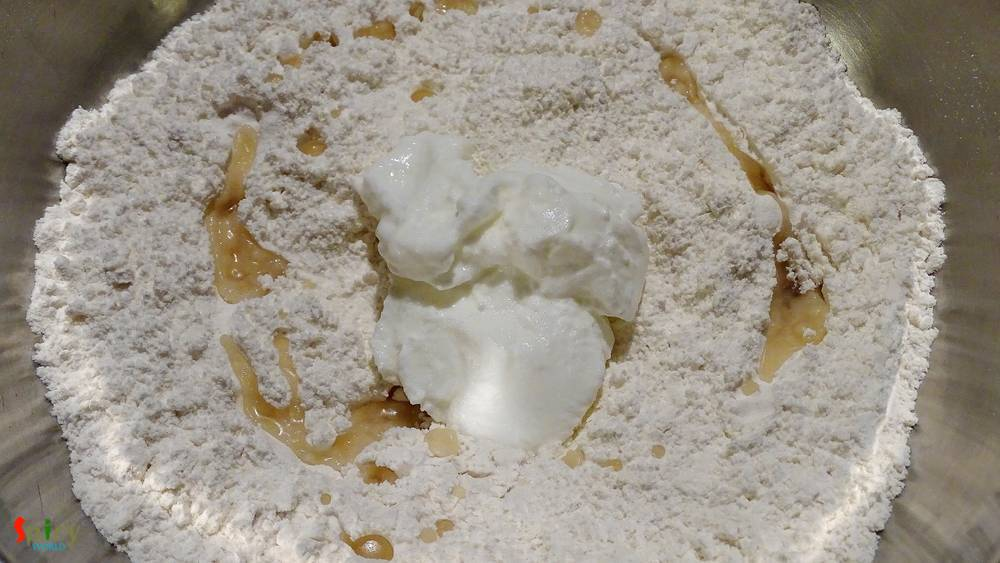
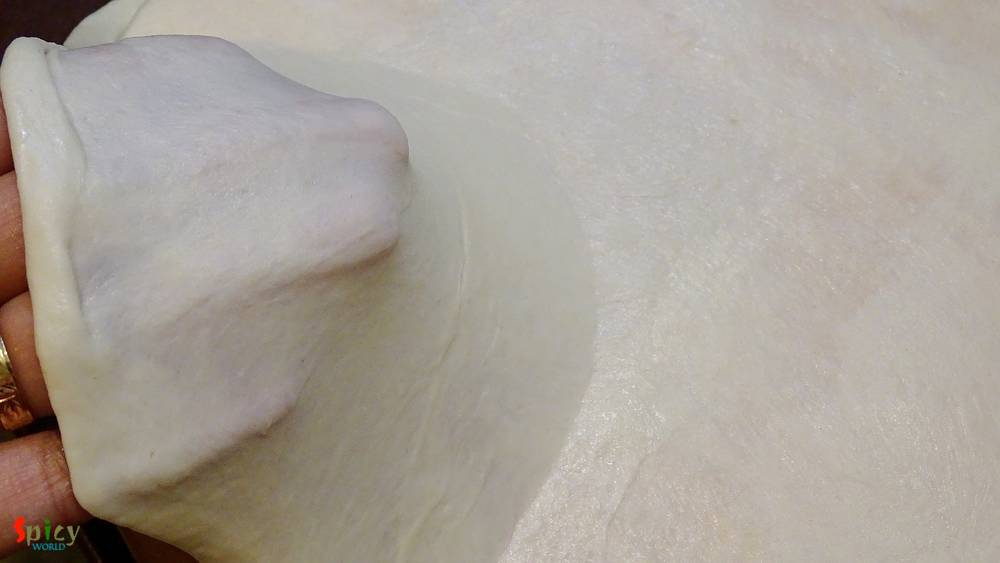
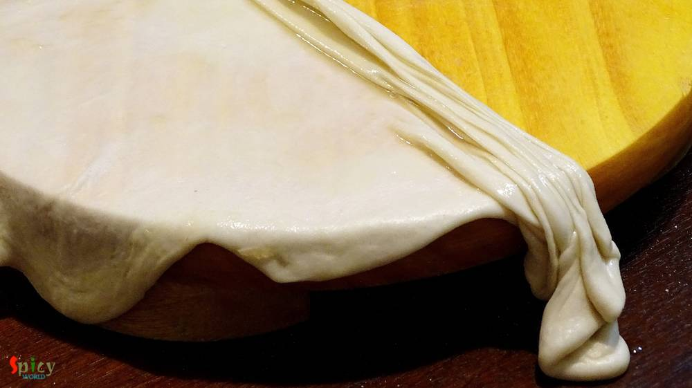

Simple and Easy Recipes
Lachha Paratha / Layered fried Bread
© 2016 Spicy World, Published on: Mar 13, 2016
In India one of the famous bread is 'lachha paratha', soft and flaky with lots of layers. You can pair almost any veg or non veg gravy with this paratha, everytime they will taste awesome. For novice, this type of paratha may not be successful on first attempt. But believe me, after few try they will seem very easy. The main attraction here is the layers. The more layers you can make, the more flaky paratha you will get. Try this recipe in your kitchen and enjoy a special dinner with your family.

Ingredients
- 1 cup of all purpose flour / maida.
- Pinch of salt.
- 1 and half Tablespoons of curd.
- White oil.
- Warm water.


Steps
Put flour, salt, curd and 2 Teaspoons of oil in a mixing bowl. Mix these with your hand very well first.

Gradually add warm water and start making a soft dough.
Knead the dough very well for 3 minutes and keep it covered for 15 - 20 minutes.
Then make lemon size balls out of it.
Now take one ball, roll it in dry flour and flatten it as thin as possible.

Apply some oil and sprinkle some dry flour all over the disk.
Then start making the plits. (The same plits you do for making paper fan).

After that hold the ends properly and tap it onto the surface to stretch it.
Now roll the dough from one end to other end.
Make rest of them in same way and keep them covered for 15 minutes.
After that flatten them into 5 - 6 inches disk and fry them in oil like the way you do any paratha.
Place them together on a plate and give sudden press from two sides. From this process all the layers will puff up.
Your lachha paratha is ready ...
Enjoy them hot with any type of curry ...
")